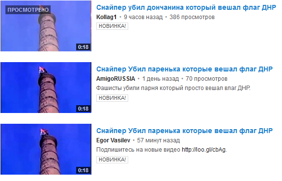
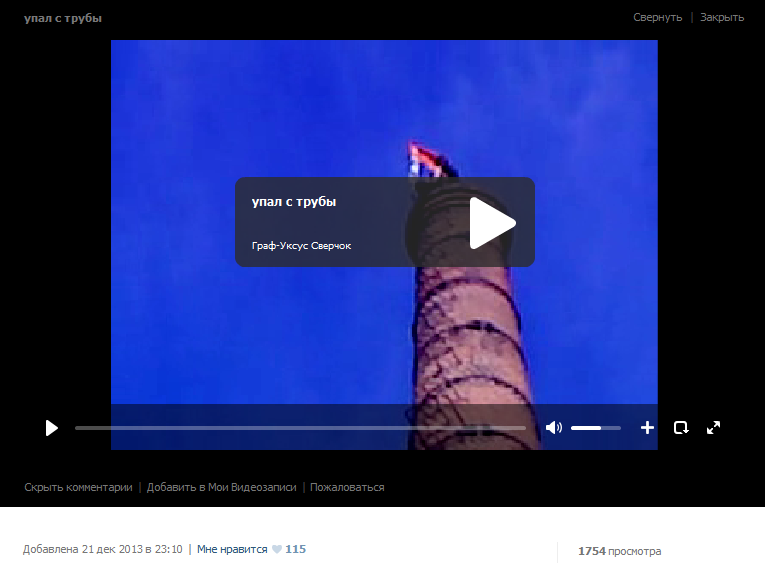

Фейк: донецкий сепаратист упал с трубы, вывешивая флаг ДНР
В сети распространяется видеозапись, на которой человек падает с огромной трубы после неудачной попытки закрепить там флаг.В описи роликов утверждается, что речь идет о донецком сепаратисте, который якобы пытался вывесить флаг Донецкой народной республики.
https://www.youtube.com/watch?v=HHgVvo41P2k
В некоторых случаях даже утверждается, что парень упал в результате выстрела снайпера.
В такие ролики перед моментом падением человека даже вставили звук выстрела.
https://www.youtube.com/watch?v=e4MJcvTcHQI
На самом деле это видео не имеет никакого отношения к нынешним украинским событиям — оно было опубликовано еще в конце прошлого года.
Просмотреть оригинал можно Вконтакте.
Posted On: 2014-05-05T21:00:00


Content Date: 2014-05-05
Download Date: 2021-07-16
Document ID: L0C04FBKL